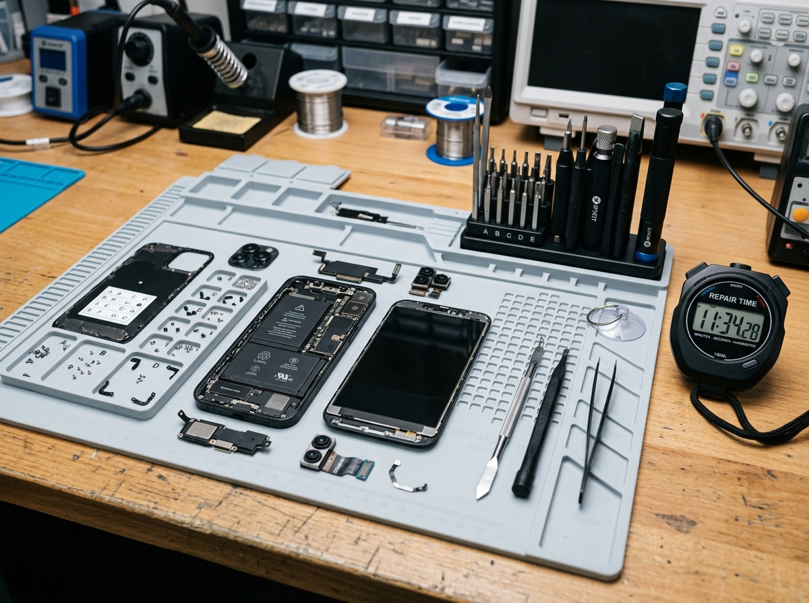

Tamir ne kadar sürer?
Kısa cevap: ekran ve batarya değişimi yarım saat, gerisi cihaza bağlı.
Ekran ve batarya değişiminde iş, parçayı söküp yenisini takmakla bitmiyor; yapıştırıcının oturması, dokunmatiğin ve sensörlerin test edilmesi de bu süreye dahil. Ortalama 25-30 dakika sürüyor ve siz dükkânda beklerken tamamlanıyor. Şarj soketi biraz daha uzun, 45 dakika civarı, çünkü önce temizlik deneniyor.
Kamera, hoparlör, mikrofon ve tuş işlemleri genelde aynı gün içinde bitiyor. Sıvı teması bir gün sürüyor: kart ultrasonik makinede temizlendikten sonra kontrollü kurutulması ve ancak ondan sonra çalıştırılıp izlenmesi gerekiyor. Anakart onarımı 1-2 gün, veri kurtarma 1-3 gün alıyor.
Bu süreler parça elimizdeyken geçerli. Az bulunan bir modelin ekranını sipariş etmemiz gerekirse süre uzayabilir; bunu cihazı bırakırken söylüyoruz, sonradan haber vermiyoruz.
